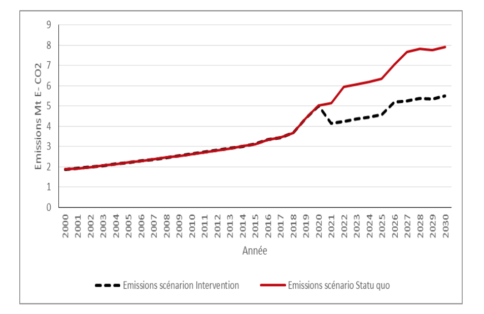

MINISTERE DE L’ENVIRONNEMENT CHARGE DE LA GESTION DES CHANGEMENTS CLIMATIQUES DU REBOISEMENT ET DE LA PROTECTION DES RESSOURCES NATURELLES ET FORESTIERES
septembre 2015
Les Contributions Prévues Déterminées au niveau National (CPDN) de la République du Benin s’appuient sur des mesures contenues dans ses Programmes nationaux de Réduction de la Pauvreté et de Gestion des Changements Climatiques dont l’objectif global est de contribuer au développement durable et résilient aux changements climatiques en apportant des solutions adéquates aux défis liés aux changements climatiques.
Elaborée à partir d’une démarche participative et inclusive ayant impliqué différentes parties prenantes (institutions publiques, secteur privé, société civile), la CPDN du Bénin situe la progression du pays dans la lutte contre les changements climatiques à l’horizon 2030 afin de contenir l’accroissement du réchauffement global en deçà des 2 degrés Celsius comme recommandé par la communauté internationale.
Dans le domaine de l’atténuation, le Bénin prévoit réduire globalement ses émissions cumulées de Gaz à Effet de Serre (hors secteur foresterie) par rapport au scénario de maintien du statu quo d’environ 21,4 % sur la période 2021 à 2030.
La part des efforts nationaux est de l’ordre de 16,4 % et celle de la contribution conditionnelle est de 83,6 %. La mise en œuvre des mesures envisagées pourrait également contribuer à accroitre la capacité de séquestration du carbone cumulée du Bénin par rapport au scénario de maintien du statu quo de 5,7 % sur la période 2021-2030 à travers la réduction du taux annuel de déforestation des forêts naturelles de 41,7 %. Au titre de cet objectif, la contribution inconditionnelle est de l’ordre de 24,6 % et la contribution conditionnelle est d’environ 75,4 %. Par ailleurs, la réduction du taux annuel de déforestation de 41,7 % pourrait permettre au Bénin de réduire ses émissions cumulées dues au secteur de la foresterie par rapport au scénario de maintien du statu quo d’environ 110 Mt E-CO2 sur la période 2021-2030. La part de la contribution inconditionnelle dans l’atteinte de cet objectif est de l’ordre de 20 % et celle de la contribution conditionnelle est de 80 %.
Par rapport à l’adaptation, les niveaux de vulnérabilité de la République du Bénin au plan national, sont en général moyens et parfois élevés. Tous les moyens et modes d’existence sont très vulnérables aux effets des changements climatiques. Les principaux secteurs concernés sont l’agriculture, les ressources en eau, la foresterie, la zone côtière, la santé humaine et l’énergie. Les principaux objectifs visés au titre de la CPDN concernent la réduction de la vulnérabilité des systèmes socio-économiques et des écosystèmes à la variabilité et aux changements climatiques en adoptant des politiques et mesures appropriées. Il s’agira donc de renforcer les systèmes de prévision de risques climatiques et d’alerte rapide pour la sécurité alimentaire dans les zones agro écologiques vulnérables, de renforcer la disponibilité des ressources en eau notamment pendant les périodes sèches, de protéger la zone côtière face à l’élévation du niveau de la mer et de contribuer au financement de l’adaptation au niveau des collectivités locales à travers le renforcement de la gouvernance locale en matière de planification et de budgétisation des activités.
La République du Benin, pour réaliser ses ambitions d’atténuation des Gaz à Effet de Serre (GES) et d’adaptation aux effets néfastes des Changements Climatiques, aura besoin d’une enveloppe financière globale de l’ordre de 30 milliards dollars US dont 2 ,32 milliards comme contribution du Gouvernement béninois sur la période allant de 2021 à 2030. Les parts qui reviennent aux mesures d’atténuation et d’adaptation sont respectivement de 12,13 et de 18,35 milliards de dollars US.
Ce rapport portant sur la CPDN qui ne saurait être exhaustif, revêt un caractère dynamique et pourrait donc être affiné à la lumière de nouvelles données et informations. La Stratégie de Développement Sobre en Carbone et résilient aux Changements Climatiques en cours d’élaboration ainsi que le Plan National d’Adaptation constituent des opportunités d’opérationnalisation des engagements contenus dans ce document.
La République du Bénin est située en Afrique Occidentale dans le Golfe de Guinée, entre les latitudes 6°30’ et 12°30’N et les longitudes 1° et 3°40’E. Elle couvre une superficie de 114 763 km2. Avec un taux moyen annuel de croissance démographique égal à 3,5 %, sa population est estimée à environ 10.725.000 habitants pour l’année 2015.
Deux types de climat régissent le pays à savoir : le climat subéquatorial dans le Sud et le climat tropical continental dans le Nord.
Le Bénin est un pays en développement dont l’économie repose surtout sur l’agriculture, le commerce et le transport avec les pays voisins. Cette caracteristique justifie les valeurs élevées des émissions de GES estimées pour l’agriculture et le transport par rapport aux autres secteurs en 2000. En dépit des efforts consentis sur le plan économique, le Produit Intérieur Brut (PIB) demeure en dessous du taux minimum de 7 % requis pour atteindre les Objectifs du Millénaire pour le Développement (OMD).
Les changements climatiques constituent un phénomène de dimension planétaire dont les conséquences se font ressentir aux plans national et local. Ce phénomène constitue une préoccupation du Gouvernement béninois qui développe des actions sur la base d’objectifs et d’orientations clairement définis à travers les structures étatiques, les collectivités locales, le secteur privé et les organisations de la société civile. Ces actions concernent entre autres :
Dans le souci de mettre en œuvre les recommandations du Sommet de la Planète Terre en 1992 (Rio de Janeiro), le Bénin a créé la Commission Nationale du Développement Durable (CNDD) et a élaboré son Agenda 21 national. Ce document de politique nationale de développement durable, comporte les orientations à long terme, les actions, les objectifs et les moyens d’exécution pour promouvoir le développement durable.
A cet égard, le Bénin s’est fixé les priorités suivantes : (i) réduire la pauvreté en liaison étroite avec la Stratégue de Croissance pour la Réduction de la Pauvreté (SCRP3) ; (ii) maintenir un niveau élevé de croissance économique ; (iii) intégrer la problématique de l’environnement dans les politiques, stratégies, plans, programmes et projets de développement.
A l’instar des autres Pays les Moins Avancés (PMA), le Bénin reste un pays particulièrement vulnérable à la variabilité et aux changements climatiques. A travers son engagement dans le processus de mise en œuvre de la Convention-Cadre des Nations Unies sur les Changements Climatiques (CCNUCC) au même titre que d’autres Etats Parties, la République du Bénin s’est fixée les objectifs suivants :
Le présent document a été élaboré sous la houlette du Ministère de l’Environnement Chargé de la Gestion des Changements Climatiques, du Reboisement et de la Protection des Ressources Naturelles et Forestières (MECGCCRPRNF) avec l’appui de l’Agence Française de Développement (AFD) et du Programme des Nations Unies pour l’Environnement (PNUE), selon une approche participative impliquant un groupe d’experts nationaux émanant du Comité National sur les Changements Climatiques et des experts de l’AFD ainsi que d’autres acteurs clés au niveau national notamment les représentants des ministères sectoriels, des Organisations de la Société Civile et du secteur privé. Il intègre les données et informations recueillies auprès de ces acteurs et a été validé puis adopté en Conseil des Ministres.
Le document s’articule autour de deux grandes thématiques à savoir l’Atténuation et l’Adaptation, y compris les aspects transversaux.
La République du Bénin fait partie des Pays les Moins Avancés (PMA) dont les émissions de gaz à effet de serre (GES) sont estimées à environ 6,3 Méga tonne Equivalent-CO2 (Mt E-CO2), soit environ 1 tonne E-CO2 par habitant en 2000, secteur Utilisation des Terres, Changements d’Affectation des Terres et Foresterie (UTCATF) exclu. Ces émissions proviennent principalement des secteurs de l’agriculture et de l’énergie dont les contributions sont estimées à 68 % et 30 % respectivement (Figure 1).
Figure 1 : Contribution de chaque secteur aux émissions globales de GES au Bénin en 2000.
En tenant compte du secteur UTCATF, le bilan des émissions (6,3 Mt E-CO2) et des absorptions (11,3 Mt CO2) de GES montre que le Bénin est globalement un puits de GES avec une capacité d’absorption de 5,1 Mt CO2 en 2000, c’est-à-dire que ses émissions de GES sont largement compensées par l’absorption du CO2 au niveau de son couvert forestier. Quoique le Bénin demeure un puits, sa capacité de séquestration du carbone, voire d’absorption du CO2, au niveau de son couvert végétal est en régression, passant de (-16,5) Mt E-CO2 en 1990 à (-11,3) Mt ECO2 en 2000, soit une diminution de 31 %, et à (-9,6) Mt E-CO2 en 2005, soit une diminution de 40 %.
L’évaluation des tendances des émissions globales de GES (hors UTCATF) et des émissions dans les secteurs de l’agriculture et de l’énergie dans le contexte de maintien du statu quo sur la série temporelle 2000-2030 est traduite par la Figure 2. La tendance des émissions globales montre un accroissement de 258,3 %, celle du secteur de l’agriculture de 178,1 % et celle du secteur de l’énergie de 321,0 % sur cette période. Le total des émissions cumulées de GES sans aucune intervention sur la période 2021-2030 avoisine 193 Mt E-CO2 (secteur UTCATF exclu).

Figure 2 : Tendance des émissions globales et des émissions dans les secteurs de l’agriculture et de l’énergie (2000-2030) – scénario maintien du statu quo.
La tendance des émissions globales et des émissions dans les secteurs clés à partir de l’année 2000 fait apparaître la nécessité de prendre des mesures d’atténuations sans compromettre les priorités de développement économique et social (Figure 2). De nombreuses opportunités d’atténuation des émissions de GES ont été identifiées à cet effet.
Au niveau institutionnel, la création d’une Direction de l’Atténuation des Changements Climatiques et de la Promotion de l’Economie Verte au Ministère en charge des changements climatiques et la Direction des Energies Nouvelles et Renouvelables au Ministère en Charge de l’Energie, offre un cadre technique de promotion et de coordination des actions. Au niveau opérationnel, les secteurs de l’agriculture et de l’énergie, y compris les transports, portent les principaux leviers d’action. Par rapport au secteur de l’énergie, il s’agit d’une large marge d’amélioration de l’efficacité énergétique, de la conversion des sources de production (gaz naturel, énergie solaire photovoltaïque, énergie hydroélectrique) et de consommation d’énergie et de la logistique « Transports ». Il s’agit également d’un fort potentiel d’amélioration des itinéraires techniques culturaux, sylvicoles et des modes d’élevage dans le secteur de l’agriculture. Les projets « Villes Durables », « Lumière pour Tous » et « Développement sobre en carbone », en cours de conception ou d’élaboration avec l’appui de l’AFD et d’autres partenaires, constitueront des opportunités complémentaires lorsqu’ils seront mis en œuvre. Par ailleurs, dans le secteur de l’UTCATF, la mise en œuvre des aménagements durables des forêts naturelles et le renforcement des efforts de reforestation/plantation offrent des opportunités de réduction de l’intensité de régression de la capacité de séquestration du carbone des écosystèmes forestiers au Bénin.
Fort des considérations précédentes, le Bénin dans sa soumission, présente une contribution à l’atténuation de GES fondée sur des mesures contenues dans des stratégies, programmes et projets pour la période 2021– 2030 avec une spécification des secteurs d’activité et des GES considérés. Les principales stratégies sectorielles et les objectifs permettant la mise en valeur de la contribution ainsi que les hypothèses et approches méthodologiques sont présentés dans les Tableau 1 et Tableau 2 et illustrés par les Figures 3, 4 et 5.
Tableau 1: Mesures au titre des contributions prévues déterminées au niveau national à l’atténuation
| Calendriers et/ou périodes de mise en œuvre | ||
|---|---|---|
| Calendrier de mise en ouvre | 2021-2030 | |
| Année de référence | 2000 | |
| Type d’engament | Contribution fondée sur des mesures contenues dans des stratégies, programmes et projets | |
| Objectifs | ||
| Objectif global | La mise en œuvre des mesures envisagées est susceptible de contribuer à réduire les émissions cumulées de GES (hors UTCATF) par rapport au scénario de maintien du statu quo d’environ 21,4 % d’ici à 2030 (Figure 3). La contribution inconditionnelle correspond à une réduction des émissions cumulées de GES par rapport au scénario de maintien du statu quo de 3,5 % d’ici 2030. La contribution conditionnelle pourrait permettre une réduction additionnelle des émissions cumulées de GES de 17,9 % par rapport au scénario de maintien du statu quo d’environ 3,5 % d’ici 2030. La mise en œuvre des mesures envisagées pourraient également contribuer à accroitre la capacité de séquestration cumulée du Bénin par rapport au scénario de maintien du statu quo de 5,7 % sur la période 2021-2030 à travers la réduction du taux annuel de déforestation des forêts naturelles de 41,7 %. Au titre de cet objectif, la contribution inconditionnelle est de l’ordre de 1,4 % et la contribution conditionnelle est d’environ 4,3 %. La réduction du taux annuel de déforestation pourrait permettre au Bénin de réduire ses émissions cumulées dues au secteur de la foresterie par rapport au scénario de maintien du statu quo d’environ 110 Mt E-CO2 sur la période 2021-2030. La part de la contribution inconditionnelle dans l’atteinte de cet objectif est de l’ordre de 20 % et celle de la contribution conditionnelle est de 80 %. | |
| Objectifs sectoriels |
Les mesures envisagées portent sur la promotion des techniques culturales améliorées dans le cadre de la production végétale. La mise en œuvre de ces mesures touchera aux catégories de sources comme les rizières, les sols agricoles, le brûlage des résidus agricoles, le brûlage dirigé des savanes.
Les efforts d’amélioration des itinéraires techniques visant la limitation de la fermentation méthanique et des émanations d’oxyde nitreux dues à la nitrification/dénitrification dans les systèmes de culture permettraient d’éviter les émissions cumulées de ces gaz à hauteur d’environ 20,9 Mt E CO2 par rapport au scénario de maintien du statu quo, soit une réduction de 20,6 % d’ici 2030 (contribution conditionnelle).
- accroissement de la capacité nationale de production d’énergie électrique et promotion de l’utilisation du gaz naturel et des énergies renouvelables dans la production d’électricité à partir (i) des centrales bicombustibles pouvant fonctionner au fioul ou au gaz naturel (400 MW), (ii) des centrales hydroélectriques (quatre centrales hydroélectriques totalisant une capacité à installer de 396,6 MW); (iii) des centrales solaires photovoltaïque (54,2 MWc) ; - promotion de l’utilisation efficace du bois-énergie ainsi que l’utilisation du Gaz de Pétrole Liquéfié (GPL) comme énergie alternative de cuisson dans les ménages à travers (i) la promotion de l’accès de 270.000 ménages utilisant du kérosène à l’éclairage à l’électricité dans les localités qui seront raccordées aux réseaux de la Société Béninoise d’Energie Electrique (SBEE) et (ii) l’économie du bois énergie par la promotion de l’accès (i) de 140.000 nouveaux ménages aux foyers améliorés et de (ii) 275.000 ménages aux équipements de cuisson.
La mise en œuvre de ces mesures contribuera à réduire les émissions cumulées de GES dans ce secteur par rapport au scénario de maintien du statu quo de 19,4 Mt E CO2 d’ici 2030, soit 28,6 % dont 18,6 % de contribution conditionnelle. Les émissions cumulées évitées se répartissent comme suit : (i) production d’électricité 63,4 % dont 46,9 % de contribution conditionnelle ; (ii) promotion de l’éclairage publique aux fins de l’économie de kérosène 35,1 % dont 17,5 % de contribution conditionnelle ; (iii) économie de bois-énergie par la promotion de foyers améliorés 1,3 % dont 1,1 % de contribution conditionnelle.
Le Bénin envisage d’accroitre la capacité de séquestration du carbone de ses écosystèmes forestiers à travers la mise en œuvre des aménagements durables des forêts naturelles et le renforcement des efforts de reforestation/plantation. Les actions envisagées sont susceptibles de contribuer à :
L’impact attendu de la mise en œuvre des mesures visant à limiter la déforestation est estimé pour les émissions évitées à 110 Mt E CO2 et pour la séquestration du carbone à 32 Mt E CO2 durant la période 2021-2030. Objectifs inconditionnels relatifs au secteur UTCATF:
Objectifs conditionnels relatifs au secteur UTCATF:
|
|
| Champ d’application et portée | ||
| Gaz à effet de serre considérés dans la contribution | Dioxyde de carbone (CO2), méthane (CH4), oxyde nitreux (N2O) | |
| Secteurs/sources ouverts par la contribution1 |
|
|
| Étendues géographiques couvertes par la contribution | Tout le territoire national | |
Tableau 2 : Hypothèses et approches méthodologiques
| Méthodologie pour la comptabilisation des missions pour l’année de référence | L’inventaire de l’année de référence est celui de la Deuxième Communication Nationale (DCN) du Bénin sur les Changements Climatiques. Les Directives Révisées de 1996 du GIEC pour les inventaires nationaux de GES (GL 1996), les Recommandations du GIEC en matière de bonnes pratiques et de gestion des incertitudes pour les inventaires nationaux de GES (GPG 2000) ont été utilisées pour tous les secteurs sauf le secteur UTCATF. |
| Approche concernant les émissions relatives au secteur de l’UTCATF pour l’année de référence. | Les Recommandations du GIEC en matière de bonnes pratiques pour le secteur UTCATF (GPG 2003), les Lignes directrices 1996 du GIEC. |
| Méthodologie de projection des émissions du scénario de statu quo | Emissions globales : L’évaluation de la tendance des émissions globales de GES dans un contexte de maintien du statu quo sur la série temporelle 2000-2030 a été faite par extrapolation à partir des données démographiques et de l’émission de GES par habitant. Les résultats obtenus à partir de l’extrapolation ont été ajustés pour tenir compte des émissions estimées pour le secteur de l’Energie sur la période 2016-2030 sur la base des GPG 2000 et des GL 1996. Les émissions annuelles de GES par habitant ont été estimées à 1 t E-CO2 pour l’année 1990-2010 sur la base des données présentées dans la DCN et à 1,1 t E-CO2 pour la période 2011 -2030.2 Secteur de l’énergie : Période 1990-2015 : l’évaluation de la tendance des émissions a été faite par extrapolation à partir des données démographiques et de l’émission de GES par habitant (0,29 t E-CO2 par habitant) estimée sur la base des émissions du secteur énergie en 2000 (DCN, 2011) ; Période 2016-2030 : l’évaluation de la tendance des émissions a été faite sur la base des GPG 2000 et des GL 1996 et des données sur les quantités de combustibles requises pour couvrir les besoins du pays en énergie électrique. Secteur de l’agriculture : L’évaluation de la tendance des émissions de GES sur la série temporelle 2000-2030 a été faite par extrapolation à partir des données démographiques et de l’émission de GES par habitant dans le secteur de l’agriculture estimée sur la base des émissions du secteur en 2000 (DCN, 2011). |
| Méthodologie de projection des émissions du scénario avec mesures | Secteur de l’énergie : GPG 2000 et GL 1996 Secteur de l’agriculture : 500 000 ha de terres de culture seront touchées chaque année à travers la mise en œuvre des mesures envisagées dans le Tableau 1 en annexe. La mise en œuvre des mesures sur ces 500 000 ha de terre contribuera à réduire globalement les émissions annuelles provenant des rizières, des sols agricoles, du brûlage des résidus agricoles, du brûlage dirigé des savanes de 30 %. |
| Méthodologie de projection des émissions du scénario avec mesures dans le secteur UTCATF | Le taux annuel de déforestation totale au niveau des forêts naturelles est estimé à 60 000 ha ; émission liée à la déforestation d’un hectare de forêt naturelle : 120 t ECO2 ; capacité de séquestration des forêts naturelles tropicales 4 t E- CO2/ha/an; capacité de séquestration du carbone des plantations forestières 2 t E-CO2/ha/an ; mise en œuvre d’un plan de reboisement avec pour objectif de créer 15 000 ha de plantation forestière par an ; protection et conservation des forêts naturelles qui permettrait de réduire et de maintenir le taux de déforestation à 35 000 ha/an. |
| Potentiels de réchauffement de la planète (GWP) | Selon la Décision 17/CP.8 de la CCNUCC pour la préparation des Inventaires nationaux d’émissions, les valeurs de PRG utilisées sont: PRG CO2 = 1, PRG CH4 = 21, PRG N2O = 310. |
| Contribution nette des mécanismes internationaux fondés sur le marché | Aucune contribution des crédits internationaux. |

Figure 3 : Estimation des émissions globales des GES en cas du scénario de statu quo et en cas d’intervention.

Figure 4 : Estimation des émissions des GES en cas du scénario de statu quo et en cas d’intervention dans le secteur de l’agriculture.

Figure 5 : Estimation des émissions des GES en cas du scénario de statu quo et en cas d’intervention dans le secteur de l’énergie.
L’adaptation dans le contexte des changements climatiques, se réfère aux initiatives, mesures, actions visant à réduire la vulnérabilité des systèmes naturels et systèmes socio-économiques.
Au Bénin, la prise en compte de l’adaptation dans la CPDN se justifie par le fait qu’elle constitue une priorité nationale au regard du degré de vulnérabilité du pays aux effets néfastes des changements climatiques. En outre, les mesures jusque là mises en œuvre ne concernent que les actions urgentes d’adaptation à court terme et de ce fait ne visent pas les moyen et long termes.
L’objectif global visé par la CPDN du Bénin en matière d’adaptation est d’accroître les efforts pour la réduction de la vulnérabilité aux impacts des Changements Climatiques des systèmes humains, à l’augmentation de la résilience des écosystèmes dans le contexte du réchauffement climatique.
Les travaux réalisés dans le cadre de l’évaluation concertée de la vulnérabilité aux changements climatiques dans les zones géographiques les plus vulnérables du Bénin (PANA, 2008) ont permis d’établir les résultats suivants :
Dans les zones agro-écologiques du centre et du nord, (i) les bassins versants, l’agriculture vivrière et des ressources en eau et (ii) les petits exploitants agricoles, les maraîchers et exploitants agricoles émergeants, et les pêcheurs sont fortement exposés aux risques climatiques.
Au niveau des zones agro-écologiques du sud (i), l’agriculture vivrière, les terres, les ressources en eau, la santé humaine et la biodiversité, et (ii) les petits exploitants agricoles, les pêcheurs et les éleveurs sont plus exposés aux risques climatiques.
Il est à noter que tous les moyens et modes d’existence sont concernés par les changements climatiques, à des échelles et à des degrés divers. Tous les secteurs clés de la problématique vulnérabilité/adaptation sont en cause : agriculture y compris élevage et pêche, foresterie, ressources en eau, zones côtières, santé humaine, énergie, etc.
Selon la Deuxième Communication Nationale du Bénin sur les Changements Climatiques (DCN, 2011), les tendances observées révèlent que la variabilité interannuelle des pluies au cours de la période 1951-2010, a été caractérisée sur l’ensemble du pays par de courtes périodes déficitaires alternant avec quelques courtes périodes excédentaires. Dans la région méridionale, les plus forts déficits ont été notés presque partout en 1977 et 1983 (années de sècheresse) tandis que les plus forts excédents pluviométriques remontent aux années 1988, 1997 et 2010 (années d’inondation). Au niveau de la région septentrionale, les années 1958, 1977 et 1983 accusent les plus forts déficits pluviométriques tandis que les années 1988 et 1998 enregistrent, dans bon nombre de localités, les plus forts excédents pluviométriques. Quant à la variabilité spatiale, elle reste en général moins marquée ou relativement faible dans les localités sises en dehors du littoral.
En ce qui concerne la température, les écarts par rapport à la moyenne, sont sensiblement de l’ordre de -0,6°C à +0,8°C. La configuration des températures moyennes annuelles observées au cours de la période 1961-2010, n’affiche pas une nette tendance à la hausse ou à la baisse.
En somme, si à l’échelle annuelle, l’analyse du climat actuel ne révèle pas de tendances significatives dans les variations des précipitations, par contre l’analyse saisonnière fait apparaître de grandes différences durant la période postérieure à 1971.
Les manifestations des risques climatiques sus indiqués ont engendré au cours des trois dernières décennies de nombreux impacts en l’occurrence la baisse des rendements agricoles, la perturbation des calendriers agricoles, la baisse des niveaux d’eau dans les barrages d’approvisionnement en eau potable, la prolongation de la période d’étiage et la submersion des berges.
Les niveaux de vulnérabilité au plan national, sont en général moyens et parfois élevés.
Quant aux impacts futurs, les horizons temporels 2015, 2025, 2050 et 2100 ont été choisis pour intégrer les effets socioéconomiques et écologiques des changements climatiques (DCN, 2011) au moyen de modèles appropriés. Les projections, indiquent entre autres :
En ce qui concerne le niveau de vulnérabilité au plan national, il est élevé notamment pour les systèmes socioéconomiques.
Face aux impacts des changements climatiques, des stratégies et programmes d’adaptation aux changements climatiques ont été élaborés tels que le Programme d’Action National aux fins de l’Adaptation aux changements climatiques (PANA), la Stratégie de Développement Sobre en Carbone et Résilient aux Changements Climatiques en cours d’élaboration ainsi que le processus d’élaboration du Plan National d’Adaptation (PNA).
Les principaux objectifs visés concernent la réduction de la vulnérabilité des systèmes socio-économiques et des écosystèmes à la variabilité et aux changements climatiques en adoptant des politiques et mesures appropriées.
Les principales cibles sont les communautés vulnérables des huit zones agro écologiques du pays.
Des initiatives ont été mises en œuvre à travers la sensibilisation du public, le développement et la mise en œuvre de mesures d’adaptation telles que la mise en place de systèmes agro-météorologiques, la promotion des pratiques agricoles résilientes aux changements climatiques, la mise en œuvre du Système d’Alerte Précoce, l’aménagement des bas-fonds ainsi que le développement des capacités de divers acteurs concernés (niveaux national et local), etc.
La mise en œuvre de ces initiatives a bénéficié de l’appui de plusieurs sources de financement dont le Budget national, le Fonds National pour l’Environnement et le Climat (FNEC), les Fonds PMA (LDCF) du Fonds pour l’Environnement Mondial (FEM), le Programme des Nations Unies pour le Développement (PNUD), la coopération allemande, l’Union Economique et Monétaire de l’Ouest Africaine (UMEOA), le Fonds d’Equipement des Nations Unies (FENU), le Centre de Recherche pour le Développement International (CRDI).
Les principaux gaps et barrières en matière d´adaptation concernent principalement l’expertise technique limitée, l’insuffisance et la qualité des données et informations, les réformes institutionnelles inadaptées, l’insuffisance de ressources financières, la quasi-inexistence de textes législatif et réglementaires en matière d’adaptation aux changements climatiques, l’inaccessibilité aux ressources technologiques appropriées, etc.
Au vu des gaps et barrières susmentionnés, les besoins nécessaires à la mise en œuvre des activités d’adaptation, tous secteurs confondus, concernent principalement le renforcement de l’expertise technique sur les méthodologies et outils d’évaluation des impacts et de la Vulnérabilité ainsi que la formulation des réponses adaptatives, l’amélioration des capacités institutionnelles, les besoins technologiques (système de surveillance et de prévision du climat, technologies appropriées d’adaptation dans divers secteurs socio-économiques, etc.), et les ressources financières. Les principales stratégies ainsi que les plans/programmes adoptés par le Bénin en vue de réduire sa vulnérabilité dans le cadre de la CPDN sont consignés dans le tableau 2 en annexe.
En matière de suivi et de notification, une liste d’indicateurs sera établie et un mécanisme de suivi sera mis en place et permettra de renseigner périodiquement ces indicateurs et d’évaluer les progrès accomplis dans l’atteinte des objectifs en matière d’adaptation. Le processus PNA offre l’opportunité de concrétiser les éléments de suivi et d’évaluation.
La République du Bénin fait partie des pays les moins avancés (PMA) dont les émissions de GES sont estimées à environ 1 t E-CO2 par habitant en 2000 et largement compensées par la séquestration du carbone au niveau du couvert forestier national. Ses émissions sont donc insignifiantes par rapport aux émissions globales. Malgré cette responsabilité très négligeable dans le réchauffement climatique et sa situation de PMA, le Bénin s’est doté d’un programme de gestion des changements climatiques incluant toutes les actions d’intervention dans le domaine de la gestion des changements climatiques. A travers la mise en œuvre de sa contribution, le Bénin renforcera son potentiel de séquestration de carbone au niveau du couvert forestier national pendant que ses émissions cumulées régresseront par rapport à l’année de référence d’ici à 2030. Un effort est en cours pour lutter contre la pollution atmosphérique à travers l’amélioration de la fluidité du trafic (construction d’ouvrages spécifiques de type échangeurs aux grands carrefours, aménagement de pistes cyclables, aménagement des voies piétonnes) notamment dans la ville de Cotonou, l’exonération fiscale et douanière sur les motocyclettes à 4T et leurs pièces détachées au détriment des motocyclettes à 2T, la réhabilitation et la modernisation du réseau ferroviaire existant pour le développement des transports en commun malgré la pression qu’exercent ces mesures sur son budget. Dans le secteur énergétique, la biomasse-énergie (bois de feu, charbon de bois) est la forme d’énergie la plus consommée au Bénin. Le pays dépend de l’extérieur pour son approvisionnement en énergies commerciales (produits pétroliers et électricité). Les mesures envisagées dans la CPDN, en même temps qu’elles visent le bienêtre des populations, sont orientées vers des énergies moins polluantes et l’économie d’énergie notamment l’efficacité énergétique, la production d’électricité à partir des sources d’énergies renouvelables malgré les surcoûts qu’elles engendrent.
La contribution du Bénin sera mise en œuvre sous l’égide du Ministère en charge des Changements Climatiques qui assure le rôle de Point Focal National de la Convention-Cadre des Nations Unies sur les Changements Climatiques avec la participation effective de toutes les parties prenantes (Ministères sectoriels, collectivités locales, secteur privé, société civile, etc.)
Le Comité National sur les Changements Climatiques (CNCC) et la Commission de Modélisation Economique des Impacts du Climat et de l’Intégration des Changements Climatiques dans le Budget Général de l’Etat (CMEICB) constituent des organes d’aide à la décision et du suivi de la mise en œuvre de la CPDN.
Le Bénin dans son Programme National de Gestion des Changements Climatiques a développé un niveau d’organisation de suivi-évaluation de la vulnérabilité et de l’adaptation aux changements climatiques visant à doter le programme d’un comité de pilotages national (CNCC), d’un comité départemental et communal d’orientation et des commissions techniques intersectorielles, permettant de donner des orientations générales, d’assurer le suivi de la vulnérabilité climatiques et les actions en matière d’adaptations/atténuation aux changements climatiques.
Les activités prévues dans le cadre de la mise en œuvre de la CPDN du Bénin requièrent des moyens financiers, technologiques et de renforcement des capacités.
6.1- Besoins en Transfert de Technologies :
En ce qui concerne les ressources technologiques, l’accent sera mis sur les technologies endogènes et le transfert Sud-Sud et Nord-Sud y compris le savoir-faire nécessaire. Les principaux besoins en transferts de technologies identifiés concernent les secteurs de l’agriculture/foresterie, de l’énergie, des déchets et du transport (tableau 3).
Tableau 3 : Besoins en transfert de technologies.
| Secteur énergie | Secteur agriculture/foresterie | Secteur déchet | Secteur transport |
|---|---|---|---|
|
|
|
Promotion de transport en commun et des véhicules propres |
6.2- Renforcement de capacités :
Le renforcement des capacités consistera au développement des compétences et de l’amélioration des capacités institutionnelles (tableau 4).
Tableau 4 : Besoins en renforcement des capacités.
| Secteurs/domaines prioritaires | Besoins en renforcement des capacités |
|---|---|
| Système d’Observation et de surveillance du climat | Mise en place d’un système d’observations et de surveillance du climat fiable sur l’ensemble du système climatique, notamment les composantes Terre, Océan et Atmosphère. |
| Renforcement des stations de mesures de la pollution atmosphérique. | |
| Mise en place des capacités de surveillance et de prévision des fluctuations et des changements atmosphériques, des systèmes d’alerte précoce et d’évaluation des impacts socioéconomiques, environnementaux, etc. | |
| Cadre institutionnel | Renforcement des structures actuelles qui opèrent dans le domaine de la protection de l’atmosphère. Création ou renforcement des structures s’occupant des questions relatives à l’adaptation. Création ou renforcement des structures s’occupant des questions de l’atténuation. Définition des plans nationaux climats et renforcement de la prise en compte des changements climatiques dans les programmes/ stratégie de développement . |
| Agriculture | Création de cellules de gestion de risques et crises agro-climatiques et mise en place d’un comité de coordination et de suivi de la mise en œuvre de la CCNUC dans le secteur agricole. |
| Intégration des questions relatives aux Changements Climatiques dans les politiques, plans et programmes de développement agricole. | |
| Formation des agents de développement rural sur la problématique des relations climat – agriculture. | |
| Formation des acteurs (techniciens, paysans, autorités locales) par le truchement de la conception de projets de développement orientés sur les relations climat – agriculture. | |
| Développement de technologies (pratiques agricoles, semences ou variétés culturales adaptées au contexte de climat modifié, biotechnologie agricole, techniques d’irrigation et d’économie de l’eau, appropriation des dispositifs de mise en œuvre des systèmes d’alerte rapide en situation de crises). | |
| Utilisation des modèles en agro-climatologie (renforcement des capacités en modélisation des risques agro-climatiques, familiarisation aux logiciels DSSAT, SARRAH, etc.). | |
| Vulgarisation des savoirs locaux en matière de gestion des risques ou crises agro-climatiques. | |
| Suivi-évaluation des projets de développement agricoles et hydro-agricoles. | |
| Energie | Promotion et amélioration de l’accès aux sources d’énergies renouvelables aux fins de sauvegarder les ressources forestières et de réduire la vulnérabilité des populations aux effets induits par les Changements Climatiques. |
| Renforcement des capacités sur les initiatives et les mesures d’économie d’énergie dans le secteur domestique. | |
| Adoption de labels et normes pour les lampes efficaces et les climatiseurs. | |
| Ressources en eau | Renforcement des aptitudes des services décentralisés de la Direction Générale de l’Eau à prévoir les risques et à gérer les crises hydro-climatiques. |
| Renforcement des capacités en matière de prise en compte des questions relatives aux Changements Climatiques dans les politiques de gestion des ressources en eau. | |
| Formation des cadres techniques dans le domaine de la vulnérabilité des systèmes hydriques aux Changements Climatiques et sur la méthodologie d’étude de la vulnérabilité des ressources en eau aux Changements Climatiques. | |
| Elaboration de projets de gestion intégrée des ressources en eau en condition de Changements Climatiques. | |
| Modélisation hydro climatique (fonctionnement hydrologique des bassins versants, fonctionnement hydrogéologique des aquifères, processus d’intrusion saline dans les champs de captage dans la zone côtière). | |
| Biodiversité | Mise en place de cellules chargées des questions de Changements Climatiques dans leur relation avec la biodiversité. |
| Prise en compte de la problématique des Changements Climatiques dans la gestion des ressources biologiques. | |
| Formation des acteurs (décideurs, techniciens, paysans, autorités locales) en élaboration de projets intégrés de conservation des ressources biologiques en situation de climat modifié et en méthodologie de conservation ex situ et in situ. | |
| Vulgarisation des savoirs locaux en matière de gestion des ressources biologiques. | |
Mise en place des systèmes d’information et d’alertes sur les effets néfastes des Changements Climatiques sur la biodiversité |
|
| Valorisation des connaissances traditionnelles en matière de relation climat - diversité biologique. | |
| Elaboration et diffusion en langues locales des textes de lois et règlements relatifs à la gestion de la biodiversité. | |
| Valorisation des connaissances traditionnelles en matière de diversité biologique pour le renforcement des puits de séquestration du carbone. | |
| Etablissements humains | Intégration des questions de Changements Climatiques dans les plans stratégiques de développement humain. |
| Formation et information des acteurs (décideurs, agents de santé, populations, autorités locales) sur les effets néfastes des Changements Climatiques sur les établissements humains. | |
| Protection des systèmes socio-économiques contre la dégradation de l’environnement côtier et l’élévation du niveau marin. | |
| Elaboration participative et suivi-évaluation de projets de développement humain intégrant les questions de Changements Climatiques. | |
| Renforcement des capacités, à différents échelons, pour interpréter et communiquer les informations climatiques pertinentes et conseiller les communautés locales. | |
| Renforcement des capacités institutionnelles et techniques de l’Administration, des organisations de la société civile et des communautés, pour l’évaluation des risques et des vulnérabilités locales, et la formulation de plans et politiques de développement sensibles au climat. | |
| Promotion de solutions d’adaptation pratiques à la variabilité du climat et aux risques futurs de changement climatique. | |
| Promotion du renforcement et du partage de connaissance sur le changement climatique, par des activités de sensibilisation, de gestion des risques et d’élaboration de politiques sensibles au genre. | |
| Santé | Formation des acteurs de la pyramide sanitaire sur les changements climatiques et leurs impacts sur la santé. |
| Mise en place d’un système de surveillance et d’information sur l’impact des changements climatiques sur la santé. | |
| Déchets | Gestion écologiquement rationnelle des déchets par filière |
6-3- Financement :
L’appui financier extérieur (bilatéral ou multilatéral) sera complété par les ressources du Budget National.
Le coût total estimatif pour l’exécution des plans, programmes et projets inscrits au titre de la CPDN du Bénin s’élève globalement à 30,13 milliards de dollars US dont 2,32 milliards de dollars US en option inconditionnelle et 27,81 milliards de dollars US en option conditionnelle. Les parts qui reviennent aux mesures d’atténuation et d’adaptation sont respectivement de 12,13 et de 18 milliards de dollar US. Cette estimation est basée sur les expériences actuelles du pays dans la mise en œuvre des projets d’atténuation et d’adaptation aux changements climatiques.
Afin de mesurer les progrès accomplis dans la mise en œuvre desdites activités, des systèmes de suivi-évaluation seront mis en place. Le système (Mesure, Notification et Vérification) sera d’une utilité certaine à cet égard.
Annexe 1
Tableau 1 : Synthèse des mesures d'atténuation au titre des contributions prévues déterminées au niveau national
| Stratégies sectorielles | Objectifs de la mesure proposée | Objectif quantifié (horizon 2030) | Options et couts | ||||
|---|---|---|---|---|---|---|---|
| Inconditionnelle* | Coût total en milliards US | Conditionnelle* | Coût en milliards US | Coût en milliards $ | |||
| Secteur Energie | Promouvoir l’éclairage publique solaire photovoltaïque dans les milieux ruraux et périurbains ; | 1000000 de lampes et torches solaires dans les ménagers | 100% | 0,151 | 0% | 0 | 0,151 |
| Promouvoir la construction des centrales solaires | construction de centrales solaires 40 MW | 50 % | 0,04 | 50% | 0,04 | 0,08 | |
| Accroître la production hydroélectrique | construction de barrages hydroélectrique 259,9 MW | 0 | 0 | 100% | 0,892 | 0,892 | |
| Electrification des localités (objectif global : 1000 ocalités) | 30% | 0,105 | 70% | 0,245 | 0,35 | ||
| Promotion de l’accès des ménages aux lampes à basse consommation d’énergie (objectif : 1 200 000 lampes | 33,33 | 0,00096 | 66,67 | 0,00192 | 0,00288 | ||
| Appui l'acquisition de par la SBEE de 200 000 kits de branchement des ménages | 0 | 0 | 100% | 0,044 | 0,044 | ||
| Promouvoir l’accès des ménages aux équipements de cuisson à gaz butane ; | 275 000 ménages et subvention à 35% des recharges de gaz | 0,63 | 0,00125 | 99,36% | 0,197 | 0,19825 | |
| Accroître la production d’électricité à partir du gaz naturel | construction de centrale fioul/gaz (400MW) | 42,82% | 0,145 | 57,18 | 0,1936 | 0,3386 | |
Construire au port de Cotonou une unité de stockage et de regazéification de gaz naturel liquéfié + pipeline de raccordement au gazoduc |
unité de stockage et de regazéification du gaz | 0% | 0 | 100% | 0,33 | 0,33 | |
| Promouvoir les foyers conomiques. | 140 000 foyers améliorés | 28,73% | 0,000125 | 71,27% | 0,00031 | 0,000435 | |
| Promouvoir les fours de carbonisation à haut rendement | - | 0% | 0 | 100% | 0,0048 | 0,0048 | |
| Créer des plantations de boisénergie. | 5000 ha | 1% | 0,01 | 99% | 0,99 | 1 | |
| Développer un système de transport fluvio-lagunaire sur les plans et cours d’eau navigables du Bénin ; | les cinq (5) communes lacustre/riveraines du lac Nokoue | 0% | 0 | 100% | 0,002 | 0,002 | |
| Développer le transport en commun intra et inter- urbain | Cotonou, Porto-Novo et Parakou | 0% | 0 | 100% | 2,7853 | 2,7853 | |
| Instaurer la taxation différentielle en faveur des véhicules d’occasion âgés d’au plus cinq (05) ans ; | 100% | 0,001 | 0% | 0 | 0,001 | ||
| Instaurer l’exonération des droits d’impôts sur les véhicules de transport en commun | - | 100% | 0,001 | 0% | 0 | 0,001 | |
| Poursuivre la promotion des vélomoteurs quatre temps 4T au détriment des vélomoteurs 2T (l’exonération fiscale et douanière sur les motocyclettes à 4T et leurs pièces détachées) ; | - | 100% | 0,001 | 0% | 0 | 0,001 | |
| secteur forestier | Promouvoir les plantations domaniales, communales et privées | superficie de 100 000 ha | 8% | 0,08 | 92% | 0,92 | 1 |
| Restaurer les forêts naturelles dégradées | 532 961 ha | 2,56% | 0,02 | 97,44% | 0,76 | 0,78 | |
| Rationaliser l’exploitation des ressources forestières | sur une étendue d’au moins 1 330 000 ha ; | 3,84% | 0,01 | 96,16% | 0,25 | 0,26 | |
| Sécuriser les limites des domaines forestier de l'Etat ; | 2 664 805 ha | 8,57% | 0,03 | 91,43% | 0,32 | 0,35 | |
| Promouvoir les activités alternatives à l’exploitation des ressources forestières. | Au plan national- | 4,65% | 0,02 | 95.35% | 0,41 | 0,43 | |
| Secteur Agriculture | Promouvoir les engrais spécifiques et autres intrants organiques biologiques pour une gestion durable de la fertilité des sols. | Les grandes zones agricoles | 0% | 0 | 100% | 0,23755 | 0,23755 |
| Secteur déchet et assainissement | Elaborer et mettre en œuvre des plans directeurs d’assainissement ; | Toutes les municipalités | 100% | 0,001 | 0% | 0,216 | 0,217 |
| Promouvoir la gestion des déchets axés sur un accroissement de la capacité de valorisation par filière biodégradable et non biodégradable | Toutes les municipalités | 0% | 0 | 100% | 0,488372 | 0,488372 | |
| Optimiser les systèmes de collecte de déchets ; | Toutes les municipalités | 100% | 0,04712 | 0% | 0 | 0,04712 | |
| Mettre en place un système de gestion décentralisé des déchets par filière au plan national. | Toutes les municipalités | 0% | 0 | 100% | 0,15 | 0,15 | |
| Doter les municipalités du Bénin de décharges contrôlées ; | 77 communes | 33,33% | 0,02 | 66,67% | 0,04 | 0,06 | |
| Limiter les impacts négatifs des déchets solides sur l'environnement dans les municipalités ; | Toutes municipalités | 25% | 0,002 | 75% | 0,006 | 0,008 | |
| Améliorer les capacités techniques et la gestion des ONG de pré-collecte | Au plan national | 0% | 0 | 100% | 0,06 | 0,06 | |
| Augmenter le taux de pré-collecte et de collecte dans les municipalités (actuellement allant de 2 à 30 % dans certaines municipalités à environ 60 % d’ici à 2030) | Toutes les municipalités | 100% | 0,02 | 0% | 0 | 0,02 | |
| Cadre institutionnel et réglementaire | Promouvoir des systèmes de production résilients aux changements climatiques | 0% | 0 | 100% | 0,06 | 0,06 | |
| Faire acquérir aux populations les connaissances, les valeurs, les comportements et les compétences pratiques nécessaires en matière d’atténuation et d’adaptation aux changements climatiques; | 2,44% | 0,01 | 97,56% | 0,4 | 0,41 | ||
| Protéger les écosystèmes et les établissements humains contre les risques liés aux changements climatiques ; | 0% | 0 | 100% | 0,7 | 0,7 | ||
| Contribuer à la prévention et à la gestion des risques de catastrophes naturels au plan national; | 50% | 0,07 | 50% | 0,07 | 0,14 | ||
| Renforcer le cadre institutionnel et réglementaire du sous-secteur Gestion des Changements Climatiques ; | 100% | 0,009 | 0% | 0 | 0,009 | ||
| Promouvoir la recherche scientifique, technique et technologique en matière d’adaptation et d’atténuation aux changements climatiques; | 0% | 0 | 100% | 0,423256 | 0,423256 | ||
Promouvoir le transfert de technologie et savoir-faire en matière d’adaptation et d’atténuation aux changements climatiques. |
0% | 0 | 100% | 0,1 | 0,1 | ||
| TOTAL | 33,79 | 0,795455 | 66,21 | 11,337108 | 12,132563 | ||
ANNEXE 2
Tableau 2 : Synthèse des mesures d'adaptation au titre des contributions prévues déterminées au niveau national
| N° | Stratégies/Plans/Programmes d’Adaptation aux Changements Climatiques |
Objectifs | Observations/état de mise en œuvre | Options et couts | ||||
|---|---|---|---|---|---|---|---|---|
| Inconditionnelle | Coût en milliards $ | Conditionnelle | Coût en milliards $ | Coût en milliards $ | ||||
| 1 | Renforcement du système de prévision de risques climatiques et d’alerte rapide pour la sécurité alimentaire dans les zones agro-écologiques vulnérables | Mettre à la disposition des acteurs et des communautés agricoles des avis et des alertes en cas d’événements météorologiques et climatologiques significatifs annoncés, dommageables aux systèmes de production
|
|
09,52% | 1,0 | 90,48% | 9,5 | 10,5 |
| 2 | Mobilisation des eaux de surfaces aux fins d’adaptation aux changements climatiques (micro-barrages) | Renforcer la disponibilité de l’eau pendant les périodes sèches aux fins d’adaptation des populations aux changements climatiques ; Promouvoir la gestion intégrée des ressources en eau | Mesure identifiée dans PANA, 2008 et DCN, 2011
|
11,11% | 0,35 | 88,89% | 2,80 | 3,15 |
| 3 | Réduction de la vulnérabilité des femmes enceintes et des enfants de moins de cinq ans face aux maladies liées aux risques climatiques au Bénin | Contribuer à la réduction de la morbidité et la mortalité dues au paludisme et autres maladies liées aux risques climatiques au Bénin. | Mesure identifiée au titre du PANA mais non encore mis en œuvre | 2,08% | 0,05 | 97,92% | 2,35 | 2,40 |
| 4 | Protection de la zone côtière face à l’élévation du niveau de la mer/érosion côtière. |
|
Mesure identifiée au titre du PANA mais non encore mise en œuvre
|
21,05 | 0,04 | 78,95% | 0,46 | 0,5 |
| 5 | Renforcement de la gouvernance locale en matière de financement de l’adaptation aux changements climatiques | Contribuer à combler le déficit de financement de l’adaptation aux changements climatiques au niveau des collectivités locales tout en développant leur capacité institutionnelle et technique pour faire face aux risques et défis climatiques dans le processus de développement local. | Un projet pilote est en cours de mise en œuvre dans 03 communes sur les 77 que compte le pays(20142016). Il y a donc nécessité de l’étendre aux 77 autres communes. | 07,32% | 0,03 | 92,68% | 0,38 | 0,45 |
| 6 | Renforcement des capacités en matière d’observation du climat | renforcer les capacités de suivi, les systèmes d’alerte précoce et la disponibilité d’informations en matière de changements climatiques pour faire face aux chocs climatiques et planifier l’adaptation aux changements climatiques au Bénin |
|
03,70% | 0,05 | 96,30% | 1,30 | 1,35 |
| Total | 8,44% | 1,52 | 91,56 | 16,83 | 18,35 | |||
Les secteurs préconisés par les Directives techniques du GIEC pour l’établissement des inventaires nationaux des GES↩